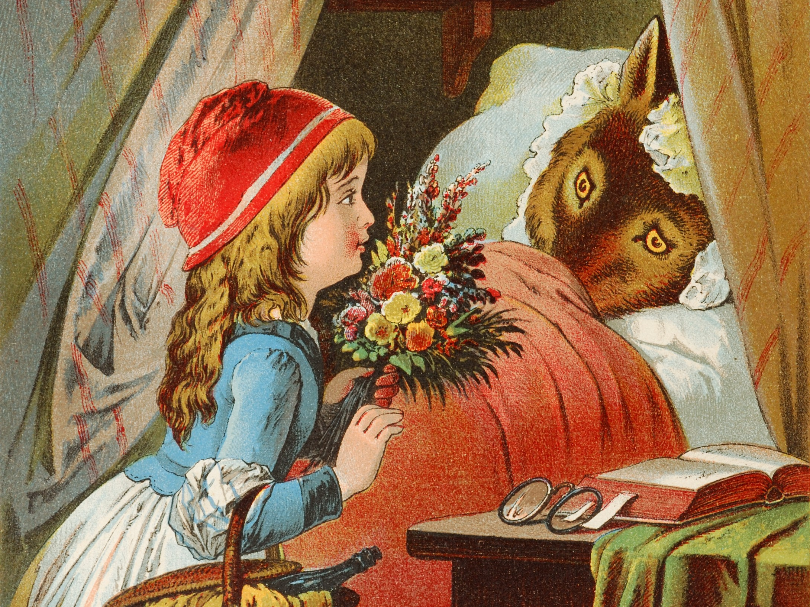

Little Red Riding Hood
Little Red Riding
Once upon a time there was a little girl who was called little Red Riding-Hood, because she was quite small and because she always wore a red cloak with a big red hood to it, which her grandmother had made for her.
And sure enough the wolf, though but for the wood- cutters he would surely have eaten little Red Riding-Hood, only stopped and asked her politely where she was going.
"I am going to see Grannie, take her this cake and this pot of butter, and ask how she is," says little Red Riding-Hood.
So the wolf pulled the bobbin, the latch went up, and— oh my!—it wasn't a minute before he had gobbled up old Grannie, for he had had nothing to eat for a week.
"All the better to hug you with," says he.
"But, Grandmamma, Grandmamma, what big legs you have!"